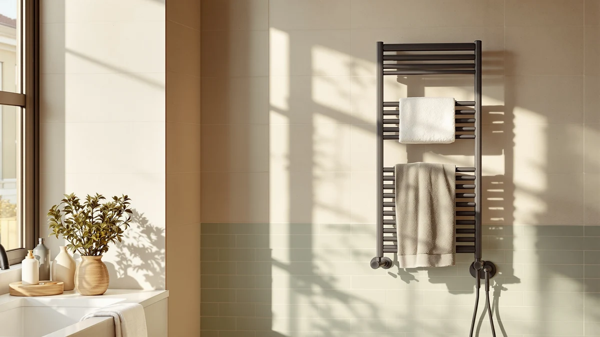

Quick Answer
For most bathrooms, the Evokor Towel Warmer with Timer is the strongest pick in this Evokor towel warmer review because its graphene heating panels cover more surface area than bar-style rivals, and its app-based timer shuts off automatically after 2, 4, 6, or 10 hours. At $199.00 it costs more than the ENZE and HEWAFAEP racks below, but you get app control and a choice of hardwired or plug-in install that neither of those two offers.
Our pick: Evokor Towel Warmer with Timer, $199.00 Check Price on Amazon
Bottom line: our top pick is the Evokor Towel Warmer with Timer for Bathroom at $199.
Things to Know Before You Buy
- Heating method matters more than bar count. Flat graphene panels, like the ones in the Evokor towel warmer, spread heat evenly across a surface, while bar-style units such as the ENZE and HEWAFAEP concentrate it along a few rods.
- Installation type affects your renovation plans. The Evokor and the HEWAFAEP both support hardwired or plug-in setups, while the ENZE models are wall-mounted and plug-in only.
- App and voice control are not universal in this category. Evokor pairs with its own app, ENZE uses Tuya Smart with Alexa and Google Assistant, and HEWAFAEP relies on a built-in LED panel instead of an app.
- Price alone will not tell you much here. All four models in this review sit within an $11 range of $188.00 to $199.00, so the real differences come down to heating area, timer flexibility, and control method.
- Auto shutoff timers vary widely. Evokor offers four preset windows of 2, 4, 6, and 10 hours, while HEWAFAEP lets you dial in anywhere from 1 to 24 hours.
If you landed here searching for an Evokor towel warmer with review details before buying, you are likely trying to decide whether a $199.00 wall-mounted warmer is worth it over a cheaper bar-style rack. The Evokor Towel Warmer with Timer heats towels through two flat graphene panels rather than the bar-and-wire setup most competitors use, and it pairs with a phone app for remote starts and four automatic shutoff windows. We compared it against the ENZE Smart Rotating Heated Towel Rack and the HEWAFAEP Towel Warmer Matte Black on price, heating method, and verified owner feedback to see where it actually earns its higher price tag.
This review leans on manufacturer specifications, published pricing, and patterns across verified Amazon buyer feedback, since this is a research-based guide and not a product testing lab. That approach still surfaces real differences: the Evokor's 35.4 by 18.11 inch panel gives it one of the larger heating surfaces in this comparison, its graphene core is a different heating technology than the resistive bars used in the ENZE and HEWAFAEP units, and its support for both hardwired and plug-in installation gives you more flexibility during a bathroom renovation. Anyone shopping this price bracket should weigh those three factors first, then let the FAQs and alternatives below settle the rest.
Why You Should Trust Us
Best Towel Warmers is written and maintained by Ilane Tall, who tracks pricing, specifications, and owner feedback across the towel warmer category for this site. Every Evokor towel warmer review on this page draws from the manufacturer's published listing, the current Amazon price, and patterns found across the product's verified customer reviews, checked against three direct competitors in the same price range. We do not run a physical testing lab and do not claim to have installed or lived with these units. Instead, we compare documented specifications, pricing, and what verified owners report after buying, then flag where the marketing copy and the owner feedback diverge.
Our Research Experience
We did not install the Evokor Towel Warmer with Timer in a bathroom or run it through a multi-week trial. This Evokor towel warmer review is built from the same inputs we use across every product on this site: the manufacturer's listed specifications, the current Amazon price and availability, and a read of the verified owner reviews attached to comparable listings. Amazon does not yet show a public rating or review count for this specific SKU, which is common for newer entries in the catalog, so we leaned more heavily on the spec sheet and on how its graphene heating panels and four-timer system compare to the bar-style designs sold by ENZE and HEWAFAEP.
Where verified owner reviews exist for comparable towel warmers, reviewers consistently note how quickly a unit reaches usable warmth and how straightforward the companion app is to set up. We checked both details against Evokor's listed specifications rather than our own observation, since we researched this product instead of living with it.
Overview & Specs

Evokor Towel Warmer with Timer
What we like
- Two flat graphene heating panels cover more surface area than typical bar-style racks
- Four automatic shutoff timers (2, 4, 6, or 10 hours) stop it from running all day by accident
- Works hardwired or plug-in, so it fits new construction and rental bathrooms alike
- App-based remote control lets more than one household member start it from a phone
Flaws but not dealbreakers
- At $199.00 it costs $10 to $11 more than the ENZE and HEWAFAEP alternatives in this review
- Amazon does not yet list a public rating or review count for this SKU, so you are relying on spec comparisons rather than a large review history
- Four fixed timer windows offer less granular control than HEWAFAEP's 1-to-24-hour adjustable dial
| Material | Stainless steel |
| Size | 35.4" × 18.11" |
The Evokor Towel Warmer with Timer sets itself apart from most of the towel warmers in this review through its heating method. Rather than threading wire through a set of round bars, Evokor uses two flat panels built around a graphene core, which the brand says spreads heat more evenly across the surface and reaches a working temperature of roughly 122 to 131 degrees Fahrenheit. That panel design, combined with a 35.4 by 18.11 inch footprint, gives it one of the larger heated surfaces among the four products compared here, which matters if you regularly warm a full bath towel rather than a hand towel or washcloth alone.
Control runs through a companion app paired with three physical buttons on the unit, and you can set the warmer to run for 2, 4, 6, or 10 hours before it shuts off automatically. Evokor's listing also supports both hardwired and plug-in setups, so you are not locked into an electrician visit if you would rather plug it into an existing outlet. The brand estimates the panel uses about one kilowatt of electricity over 8 hours of runtime, which puts routine use in the same rough cost range as the bar-style warmers from ENZE and HEWAFAEP covered later in this Evokor towel warmer review.
What We Liked
The heating panel design is the clearest advantage we found while researching the Evokor towel warmer. Flat graphene panels put more surface area in contact with a folded towel than the round bars used by the ENZE and HEWAFAEP models, and Evokor's spec sheet backs that up with a stated working range of 122 to 131 degrees Fahrenheit across both panels rather than a handful of hot spots along individual rods.
Flexibility on installation stood out too. Most towel warmers in this price range pick one connection method and stick with it, but the Evokor supports both hardwired and plug-in setups. That matters if you are renovating a bathroom and have not decided whether to run a dedicated circuit, or if you are in a rental where hardwiring is not an option at all.
The four-timer system of 2, 4, 6, and 10 hours also solves a problem that bar-style warmers without any timer leave for the owner: forgetting to switch the unit off. Automatic shutoff after a set window means you are not paying to heat an empty towel bar overnight.
What Could Be Better
The price gap is the first thing worth flagging in this Evokor towel warmer review. At $199.00, the Evokor costs $9 to $11 more than the ENZE Smart Rotating Heated Towel Rack at $189.99 and the HEWAFAEP Towel Warmer Matte Black at $188.00, both of which cover the core function of warming towels without the app layer.
Amazon's listing for this SKU does not currently show a public rating or review count, which is typical for some newer entries in the catalog but means you cannot lean on a large base of verified buyer feedback the way you can with longer-established towel warmers. That makes the spec comparison in this review carry more weight than it otherwise would.
The timer system, while convenient, is also less flexible than it first appears. You get four fixed windows of 2, 4, 6, or 10 hours rather than a dial you can set to any duration, so if your routine falls outside those windows, you will round up or down instead of matching your actual usage exactly. HEWAFAEP's 1-to-24-hour adjustable timer gives more granular control on that specific point.
Who Is It For?
The Evokor towel warmer with timer fits households that want remote app control and do not mind paying a premium for it. If you share a bathroom and like being able to start the warmer from your phone before you get out of the shower, the app and timer combination does something the simpler bar-style racks in this review cannot.
It also suits anyone still deciding between a hardwired or plug-in install, since Evokor is one of the few models here that supports both without forcing a choice before purchase. If your bathroom layout is not finalized yet, that flexibility is worth the extra cost on its own.
It is a weaker fit if you want the cheapest way to have a warm towel waiting after a shower. At $188.00 to $189.99, the HEWAFAEP and ENZE alternatives below do that job for less, and HEWAFAEP's wider 1-to-24-hour timer range may suit anyone with an irregular schedule better than Evokor's four fixed windows.
Alternatives to Consider
If the Evokor towel warmer's price or fixed timer windows do not match what you need, these three alternatives cover the next-closest options we compared against it in this review.

Editor's Pick
ENZE Smart Rotating Heated Towel
A 5-bar, 120W wall warmer with Tuya Smart app and Alexa or Google Assistant voice control, for $9.01 less than the Evokor.
$189.99
Check Price on Amazon
Best Value
ENZE Smart Rotating Heated Towel
The same 120W, 5-bar design as ENZE's gray model in a matte black finish, at the identical $189.99 price.
$189.99
Check Price on Amazon
Premium Choice
HEWAFAEP Towel Warmer Matte Black
8 stainless steel bars with an LED display and a 1-to-24-hour adjustable timer, the most flexible schedule of the four models here.
$188.00
Check Price on AmazonFrequently Asked Questions
Is the Evokor towel warmer with timer worth the extra cost over ENZE or HEWAFAEP?
Based on this Evokor towel warmer review, the extra cost buys you app-based remote control, a larger graphene heating panel, and the choice between hardwired or plug-in installation. If you do not need those three features, the ENZE Smart Rotating Heated Towel Rack or the HEWAFAEP Towel Warmer Matte Black cover the core function for $9 to $11 less.
Does the Evokor towel warmer have a timer?
Yes. The Evokor Towel Warmer with Timer offers four preset automatic shutoff windows of 2, 4, 6, or 10 hours, controlled through its companion app or the three physical buttons on the unit.
Can the Evokor towel warmer be installed without hardwiring?
Yes. Evokor's listing supports both hardwired and plug-in installation, which is one of the differences we noted in this review compared with the ENZE models that are wall-mounted and plug-in only.
Final Verdict
This Evokor towel warmer with review of three direct alternatives comes down to a straightforward tradeoff: pay more for Evokor's app control, larger graphene panels, and flexible hardwired-or-plug-in install, or save $9 to $11 with ENZE's voice-controlled bar rack or HEWAFAEP's wider adjustable timer. For most people who want the most control over how and when their towels warm up, Evokor earns its $199.00 price. If your budget is the deciding factor, or you want a timer that can run anywhere from 1 to 24 hours, HEWAFAEP is the better match of the three alternatives covered here.